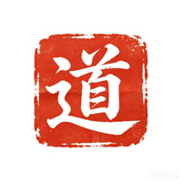

James, your BaZi chart is built on the foundation of Ren Water, born in the Spring of 1987 under the Ding Mao year, Jia Chen month, Ren Chen day, and Jia Chen hour. Your Day Master, Ren Water, is strategic and fluid — strongest when thought can move freely — but here it stands in a season where Wood qi is abundant and the Earth of Chen branches presses in from all sides.
The chart reveals a person shaped by growth and direction, yet carrying a quiet weight that demands steadiness. Your life focus is wealth — not merely its accumulation, but its retention and the wisdom to hold what comes. The reading shows that you are at a stage where the old patterns of chasing gain must give way to a more measured approach.
Metal and Earth emerge as your guiding elements, offering support where the chart is thin and restraint where it is full. The road ahead is not one of force, but of alignment: act in season, lean into what your fate is prepared to carry, and let your resources settle before you reach for more.
Your Day Master is Ren Water, the great river that adapts and finds its way around obstacles. In this chart, you are born in Spring, when Wood energy is at its peak — the season of growth, expansion, and outward movement. Water nourishes Wood, so your Day Master naturally pours itself into creative and productive channels. Yet the chart shows you as weak in overall strength (score −2.3), meaning your river is not deep enough to sustain endless giving.
The Chen branches — Earth dragons — appear in the month, day, and hour, pressing on your Water with their stable, earthy weight. This Earth can dam your flow, creating pressure and the need to find a way around. Your nature is to move with intelligence, not brute force. When you honor your need for rest and resource, you find your strength. When you push too hard, you risk exhaustion. The key is to remember that a river does not fight the land; it carves a path over time.
The elements tell a clear story of imbalance. Wood is the strongest element with a count of 7.5, reflecting the Spring season and the Jia Wood stems on your month and hour pillars. This Wood represents your talent, expression, and the drive to create and expand. But Wood consumes Water, your Day Master, and also drains Metal — which is your weakest element at 0. Fire appears lightly at 2, while Earth is strong at 6, coming from the three Chen branches.
The absence of Metal is the most critical note. Metal would generate Water and also prune the excessive Wood, giving your chart the discipline and structure it needs. Your favorable elements are Metal first, then Earth and Water. The story of your chart is one of managing abundance: you have plenty of Wood energy for creativity and action, but you must bring in Metal and Earth to channel it productively, or you risk dispersing your resources without lasting gain.
Among the ten gods, Seven Killings stands as the dominant force with a strength of 2.4. This represents pressure, risk, discipline, and the need to convert stress into courage. In your chart, Seven Killings appears in the hidden stems of all three Chen branches — a constant undercurrent at work, in your personal palace, and in your later years. This is not a gentle influence; it pushes you to act, to compete, and to prove yourself.
Close behind is the Hurting Officer at 2.0, which brings sharp expression, a refusal to be boxed in, and friction with authority. Eating God also appears at 2.0, adding talent and ease of expression. Direct Wealth appears only once, at 1.0 in the year pillar — wealth is present in your early environment but not abundant. Rob Wealth at 1.2 suggests that money can be easily taken or shared, so retention is a key issue.
The central tension in this chart is the clash between Wood's expansive, creative drive and Earth's heavy, restraining pressure. The Day Master, Ren Water, is born in Spring when Wood qi is at its peak, making the chart naturally lean toward output and expression. However, the month, day, and hour branches are all Chen (Earth Dragon), each storing Wu Earth as Seven Killings. This creates a powerful officer element that presses on the already weak Water Day Master.
You are pulled in two directions: one toward action, visibility, and risk (driven by Seven Killings and Hurting Officer), and the other toward preservation, stability, and measured gain (needed by your Ren Water). The Earth of the Chen branches adds pressure, making you feel like you must perform or achieve, yet your Water is not deep enough to sustain constant output.
This tension is most acute in the realm of wealth: you have the drive to earn, but the chart shows leakage through Rob Wealth and the absence of Metal to hold things together. The score of −2.3 for Day Master strength confirms weakness — the fate walks a line between wanting to express freely (Wood) and being forced to submit to pressure (Earth).
Without Metal to support Water and prune Wood, the chart risks either being overwhelmed by Earth's control or drained by Wood's creativity. The absence of Metal in the element count is the most critical gap — it is the element that could harmonize this tension. The knot your fate presents: learn to hold before you reach, and the river will find its course.
Direct Wealth (Ding Fire) appears only in the year stem, indicating that early opportunities may have offered a taste of abundance, but the chart lacks strong Fire to sustain it. The real wealth dynamic is governed by Seven Killings and Hurting Officer — the former creates pressure that can force you to earn through discipline and hard work, while the latter generates creative income through talent and innovation. But both drain Water's resources.
Wealth leakage is a real concern: money may come in through effort or talent but slip away due to impulsive decisions, poor planning, or external pressures. The guiding principle is to strengthen the self before seeking expansion — reduce leakage first, then grow.
Wealth in this chart is treated as a resource that must be received, held, and circulated — not merely chased. With Wood scoring 7.5 and Earth 6, the chart is heavy on output and control, leaving Water (3.5) and Metal (0) too thin to stabilize. The favorable elements are Metal (primary) and Earth (secondary), meaning wealth is best accumulated by first strengthening the self with Metal's support and then using Earth's structure to hold gains.
Timing in this chart is read through the interplay of the four pillars and the seasonal command. At approximately age 39, you enter an "Expansion" life phase, which emphasizes career building, wealth circulation, and visible responsibility. This is a period where the chart is more open to growth — but only if the foundation is secure.
The year 2026 is marked by the Bing Wu (Fire Horse) pillar, which introduces Fire element that can warm the chart but also further drain Water. Fire is not a favorable element here, so this period may bring increased pressure, competition, or expenses. The key is to use Metal and Earth to shield against Fire's consuming nature.
Beyond 2026, the chart responds best to years with strong Metal or Earth stems and branches. Favorable periods align with Geng, Xin, Shen, and You (Metal) and Ji, Wu, Chen, and Xu (Earth). The seasonal command of Spring means early months carry strong Wood energy, which is draining — focus financial decisions in late summer (Earth season) or autumn (Metal season).
The chart's strongest tool for wealth is not the Wealth star itself, which appears only once, but the transformation of Seven Killings pressure into productive discipline. Seven Killings is Earth, and Earth can generate Metal if properly nourished. By treating every financial challenge as a lesson in structure and control, you convert pressure into a resource. This is the hidden wisdom: wealth is not found in the Direct Wealth star alone, but in the ability to master the forces that oppose you.
The Hurting Officer (Yi Wood) in the year branch gives you a sharp, expressive mind that resists being told what to do. This can work against wealth if you reject sound advice or rebel against financial discipline. The chart asks you to channel this energy into creative problem-solving rather than defiance. When you feel the urge to break free from routine, ask yourself whether that freedom serves your long-term wealth or only your immediate impulse.
Your surroundings matter greatly. The element count shows Metal is absent, so consciously introduce Metal into your environment. Place metal objects — a brass bell, a silver coin, a metal sculpture — in the northwest area of your home or office. Avoid clutter and sharp angles that create sha qi; instead, favor clean lines and organized spaces. Earth elements like ceramics or crystals can also help, but Metal is the priority.
The partner palace (day branch Chen) stores Seven Killings, meaning your intimate relationships may bring financial pressure or responsibilities. This is not inherently negative, but it requires clear communication about money. The Rob Wealth star hidden in Chen also suggests that a partner could inadvertently drain resources. Ensure financial agreements are transparent. A supportive partner who embodies Earth stability or Metal discipline will be a great asset.
Metal is the primary useful god in your chart, scoring 8.8 in the useful god analysis. It is the element most needed to support the weak Water Day Master, prune the excessive Wood, and provide the discipline to hold wealth. Metal generates Water, which strengthens your core, and also restrains Wood, which is the source of leakage. Without Metal, the chart lacks the ability to convert pressure into stability. A bracelet carrying Metal energy acts as a constant reminder and energetic anchor for this support.
A clean, geometric design resonates with Metal's nature: clarity, precision, and cutting through confusion. A simple band or a design incorporating a circle (completion, cycles) or a square (Earth support) would be ideal. Avoid overly ornate or flowing designs — they introduce Wood or Water energy that may scatter Metal's focus.
Silver is the preferred material — the most direct expression of Metal element in jewelry. Silver is associated with the Moon, reflection, and purity, all qualities that support Water's nature without overwhelming it. White gold or platinum are also acceptable. Avoid gold, as its Fire element can drain Water further.
Wear the bracelet on your left wrist, as the left side is traditionally associated with receiving energy. It should be worn daily, especially during financial decisions, meetings, or when you feel scattered. Clean it regularly to maintain its luster and energetic clarity. Have it blessed or charged under the light of a full moon to align with Water's cycles. Do not lend it to others — it is attuned to your specific chart. Replace it if it breaks or becomes tarnished beyond cleaning, as this may indicate the energy has been fully absorbed.
Wood-based materials like jade or bamboo are not recommended — Wood is already excessive in your chart (score 7.5) and will further drain Water. Fire-based materials like gold or red stones are unsuitable, as Fire consumes Water and increases leakage. Earth materials like clay or terracotta are acceptable as secondary support, but they are not as effective as Metal. A single, well-chosen Metal bracelet is more powerful than a collection of mixed elements.
| Year Pillar | Month Pillar | Day Pillar | Hour Pillar |
|---|---|---|---|
| Ding Mao / Fire Rabbit | Jia Chen / Wood Dragon | Ren Chen / Water Dragon | Jia Chen / Wood Dragon |
Year stem: Direct Wealth. Month stem: Eating God. Day stem: Friend. Hour stem: Eating God.
All three Chen branches store Wu Earth as Seven Killings (main qi) with secondary Yi Wood (Hurting Officer) and residual Gui Water (Rob Wealth).
| Element | Score | Status | Role in This Chart |
|---|---|---|---|
| Wood | 7.5 | High | Dominant. Drives creativity and output but drains Water and Metal. |
| Earth | 6 | High | Strong from three Chen branches. Creates pressure as Seven Killings but also provides structure. |
| Water | 3.5 | Moderate | Day Master element. Needs support — not deep enough to sustain constant output. |
| Fire | 2 | Low | Wealth element. Present but thin. Cannot sustain abundance on its own. |
| Metal | 0 | Absent | Critical gap. The primary useful god. Must be cultivated for balance. |
The useful god (Yong Shen) is Metal, scoring 8.8 across four analytical layers. It is needed to support the weak Water Day Master (support/control method), prune excessive Spring Wood (climate method), and act as medicine to restrain Wood's dominance (disease-medicine method). Earth is secondary (2.6), helping to nourish Metal and provide structure. Water is supportive (2.4) as a companion element. Wood is to be avoided (0.8) as it drains the Day Master. The guiding principle: strengthen the self before seeking expansion.
At approximately age 39, the chart enters an "Expansion" life phase, emphasizing career building, wealth circulation, and visible responsibility. The year 2026 (Bing Wu, Fire Horse) introduces Fire energy that may challenge Water — caution advised. Favorable periods align with Metal and Earth years. This is not a precise Da Yun calculation but a readable stage prompt based on the simplified life-stage layer.